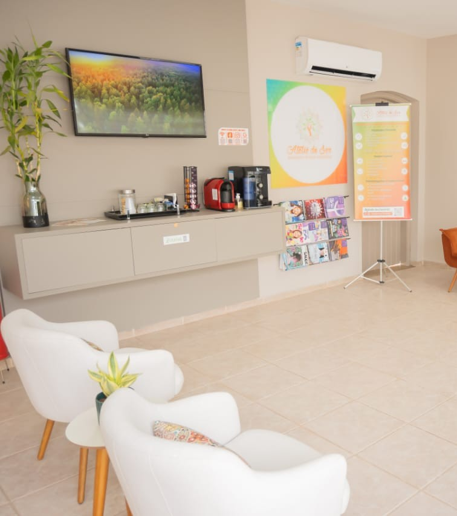
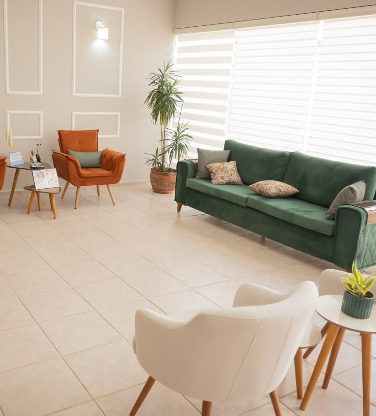
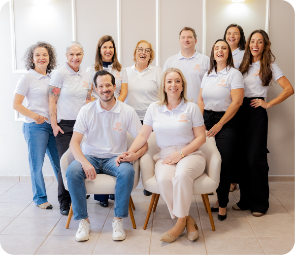

Um espaço terapêutico dedicado ao cuidado integral do ser humano.
O Ateliê do Ser é um espaço terapêutico dedicado ao cuidado integral do ser humano, reconhecendo a inseparável conexão entre corpo, mente, emoções e alma.
Nossa missão é promover saúde, prevenir o adoecimento e favorecer o desenvolvimento humano por meio de uma abordagem sistêmica, integrativa e multiprofissional, respeitando a singularidade, a trajetória e o momento de vida de cada pessoa.
Aqui, acreditamos que cuidar vai além de aliviar sintomas. É criar um espaço de acolhimento, escuta e presença, onde cada pessoa possa compreender sua própria história, fortalecer seus recursos internos e construir novos caminhos para viver com mais consciência, equilíbrio e sentido.
Agende seu atendimento

Cuidando do ser humano em sua integralidade: corpo, mente, emoções e alma.
Cada pessoa chega ao Ateliê do Ser por um motivo diferente. Há quem busque compreender a própria história, enfrentar um momento desafiador, fortalecer relacionamentos, cuidar da saúde física e emocional ou simplesmente viver com mais equilíbrio e qualidade de vida.
Independentemente do caminho escolhido, nosso compromisso é oferecer um ambiente acolhedor, seguro e respeitoso, onde você possa encontrar o cuidado mais adequado ao seu momento de vida. Os atendimentos podem ser realizados de forma individual ou em grupo, presencialmente ou on-line, proporcionando flexibilidade para que o cuidado faça parte da sua rotina.
Cuidar da sua história é também abrir espaço para novos caminhos.
Agende seu atendimento
Os atendimentos podem ser individuais ou em grupo, presenciais ou online, permitindo que você escolha o que faz mais sentido para o seu momento.
No Ateliê do Ser, tradição e inovação caminham juntas. Aqui você é convidado a escolher com liberdade e consciência o seu caminho de autocuidado.
Mais do que serviços, criamos um espaço onde você pode se sentir acolhido e seguro para ser quem é.
Venha fazer parte de uma comunidade que valoriza o bem-estar integral e o desenvolvimento pessoal.
Quero fazer parte